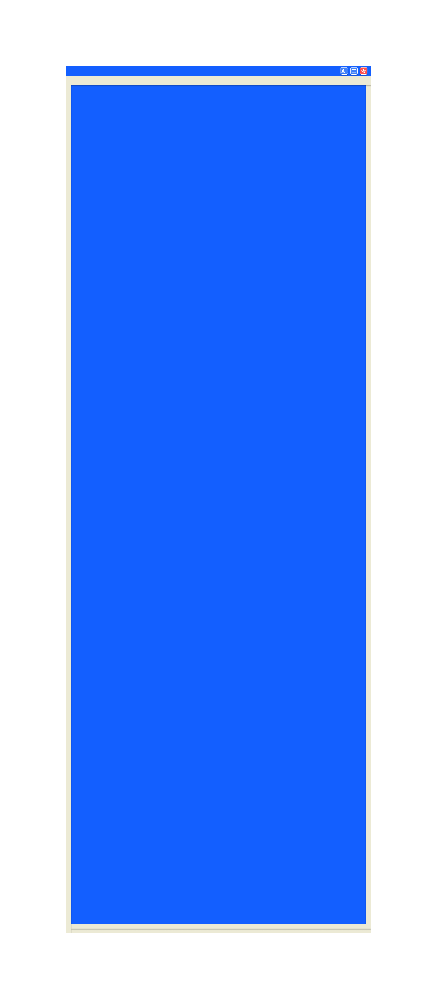

История социальных сетей ярко отражает развитие общества. Сейчас чаще всего используется Телеграм, чуть реже Вконтакте, но давайте откатимся на 15 лет назад и посмотрим на картину происходящего. Взглянем на историю рунета, поскольку с ней мы все знакомы лучше и жили в его контексте. Пройдемся по хронологии переходов сообщества из одной соцсети в другую.
Скорее всего вашей первой страничкой была страница в «Моем мире», ведь все мы заводили почту, и mail.ru высвечивал в верхней строке манящую ссылку на этот сайт. Пользователи создавали страничку, заводили друзей, обновляли фото и играли в игры. Браузерные игры той эпохи — это тема на отдельную статью, а то и целую серию. Время шло, а «Мой мир» словно застыл где-то в прошлом: никаких обновлений, устаревший интерфейс, а внимание людей становилось все сложнее удержать. Тогда на арену вступили «Одноклассники». Они были яркими для того времени и расширяли возможности, которые уже были у пользователей. В них все твои действия были как на ладони и никого это не смущало. Спустя годы, возвращаясь на свою страницу можно умереть от стыда за свои лайки и комментарии, но тогда это было вполне нормальным. Огромное количество сообществ и игр, просто море контента. На этом сайте люди находили своих старых друзей и восстанавливали связь, дарили друг другу подарки и просили зайти знакомых в ту или иную игру для взаимопомощи. Это был уже более популярный проект, в отличие от «Моего мира», про него знают многие, пусть даже и хотя бы в ироничном контексте. Сейчас основной активной аудиторией являются люди за 50, которые привыкли к ним и их все устраивает. Стабильность — это в своем роде тоже хорошо.
И наконец главная соцсеть рунета: «Вконтакте». Золотая эпоха интернета: стена, сохраненки, топовые паблики и многое другое. Вряд ли есть много людей, у которых никогда не было странички в вк. Он прошел через многое и стал теплым воспоминанием о юности для целого поколения. В отличие от предыдущих, вк жив и до сих пор обновляется с завидной частотой. Да, онлайн в нем бесспорно упал с 2017, но тем не менее. Работает он до сих пор неплохо, особенно в ограничениях рунета в данный момент.
Переходить из одной сети в другую было тяжело по ряду причин. Кому-то нравилась стабильность, кому-то не заходил дизайн других сетей, кто-то был привязан к своим аккаунтам в играх(прогресс сохранялся для каждой соцсети отдельно, а ведь кто-то донатил), но время все расставляло по своим местам. Сейчас на многих страницах последний заход в онлайн был несколько лет назад. Мы оставили мощный цифровой след. Старые соцсети это громадные цифровые кладбища, тонна неизведанного материала. Менялись сайты, менялся портрет эпохи, менялись наши ценности: от камерности и закрытости, к открытости миру и к созданию своего образа в глазах окружающих. Мы стали менее искренними с годами, перестали доверять людям в интернете, что пожалуй не зря. И то как менялся выбор людей показывает всю смену менталитета интернет сообщества.
